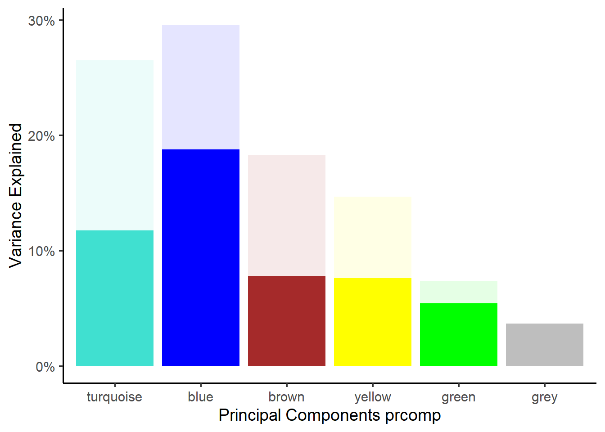
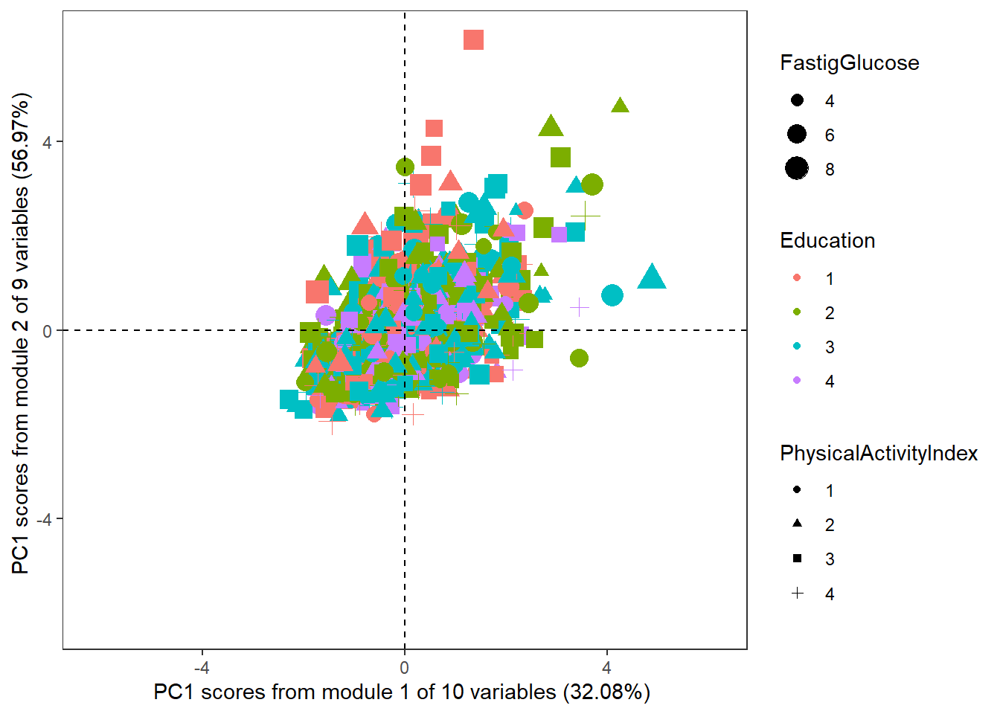
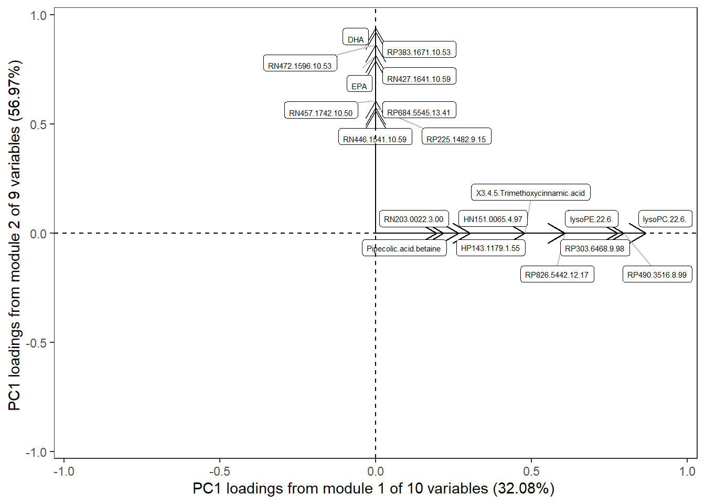
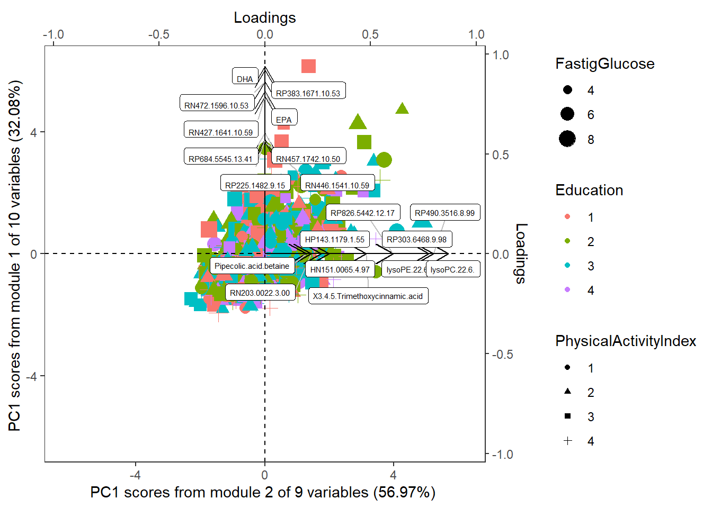

Code
#run code, and show code, and show output
5[1] 5Code
s<-function(x){x+1}
s(23)[1] 24Before starting,please make sure you have installed the TriplotGUI package following Setup.
The code of at this page can be downloaded here
The data used in this page of tutorial can be downloaded here in rda format.
The Data used for this example of code is HealthyNordicDiet_2. This is a synthetic dataset that was simulated from the authentic data used in a case/control study nested within the Swedish prospective Västerbotten Intervention Programme cohort. The original study was set up to explore plasma metabolites that could objectively reflect healthy Nordic dietary patterns in a matched case-control study and to assess associations between such patterns and later development of type 2 diabetes. (Shi et al. 2018). The simulated data HealthyNordicDiet_2 is a list that contains three data frames:
"ID","T2D"(Cases and controls for type 2 diabetes), "PairedInfo"(Pairing information for case and controls),"Energy","Gender","Age","BMI","Smoking","PhysicalActivityIndex","Education","FastingGlucose"."HFI"( Healthy Food Index),"BSDS"(the Baltic Sea Diet Score),"Wholegrains","Sausage","Pizza","Refined.bread", "Fruits","Liquor","Wine","Hamburger","Poultry","Fish","Margarine","Cabbage","Carrot","low_fat_Dairy","Vegetables"
The data frames are row-wise matched by observation and consist of 1000 synthetic observations.
Reference
Shi, L., Brunius, C., Johansson, I., Bergdahl, I. A., Lindahl, B., Hanhineva, K., & Landberg, R. (2018). Plasma metabolites associated with healthy Nordic dietary indexes and risk of type 2 diabetes—a nested case-control study in a Swedish population. The American Journal of Clinical Nutrition, 108(3), 564-575. 10.1093/ajcn/nqy145
Schillemans T, Shi L, Liu X, Åkesson A, Landberg R, Brunius C. Visualization and Interpretation of Multivariate Associations with Disease Risk Markers and Disease Risk-The Triplot. Metabolites. 2019 Jul 6;9(7):133. doi: 10.3390/metabo9070133
We want to assess the relationship between diet, metabolic profiles and Type 2 diabetes and BMI.
HealthyNordicDiet_2 is loaded in the R environment up on running library(TriplotGUI). We will do some data exploration first to see how the data looks like.
Check HealthyNordicDiet_2 as a list:
Check the names of variables in each data:
colnames(HealthyNordicDiet_2$ClinData) [1] "ID" "T2D" "PairedInfo"
[4] "Energy" "Gender" "Age"
[7] "BMI" "Smoking" "PhysicalActivityIndex"
[10] "Education" "FastingGlucose" colnames(HealthyNordicDiet_2$MetaboliteData) [1] "Pipecolic.acid.betaine" "lysoPC.18.0."
[3] "HP143.1179.1.55" "lysoPE.22.6."
[5] "HN151.0065.4.97" "RP225.1482.9.15"
[7] "X3.4.5.Trimethoxycinnamic.acid" "DHA"
[9] "RP383.1671.10.53" "gama.tocopherol"
[11] "RP431.3516.11.96" "RP490.3516.8.99"
[13] "lysoPC.22.6." "Steroid.glucuronide"
[15] "RP684.5545.13.41" "RP197.0926.3.17"
[17] "RP303.6468.9.98" "RP816.5684.12.52"
[19] "RP827.5356.11.88" "RP826.5442.12.17"
[21] "RN201.1498.8.23" "RN203.0022.3.00"
[23] "EPA" "PC.18.2.15.0."
[25] "RN814.5610.12.14" "RN153.0190.3.5"
[27] "RN427.1641.10.59" "RN457.1742.10.50"
[29] "RN830.5845.12.46" "RN446.1541.10.59"
[31] "RN472.1596.10.53" colnames(HealthyNordicDiet_2$FoodData) [1] "HFI" "BSDS" "Wholegrains" "Sausage"
[5] "Pizza" "Refined.bread" "Fruits" "Liquor"
[9] "Wine" "Hamburger" "Poultry" "Fish"
[13] "Margarine" "Cabbage" "Carrot" "low_fat_Dairy"
[17] "Vegetables" We Transform the data to dataframe format and then use TriplotGUI’s checkdata() function in to examine the class of variables.
ClinData<-as.data.frame(HealthyNordicDiet_2$ClinData)
MetaboliteData<-as.data.frame(HealthyNordicDiet_2$MetaboliteData)
FoodData<-as.data.frame(HealthyNordicDiet_2$FoodData)
ClinData_check<-checkdata(ClinData)
MetaboliteData_check<-checkdata(MetaboliteData)
FoodData_check<-checkdata(FoodData)ClinData_check$class_sumamry_statistics$check_class_vector
ID T2D PairedInfo
"numeric" "factor" "factor"
Energy Gender Age
"numeric" "factor" "numeric"
BMI Smoking PhysicalActivityIndex
"numeric" "factor" "factor"
Education FastingGlucose
"factor" "numeric"
$check_class_table
check_class_vector
factor numeric
6 5 MetaboliteData_check$class_sumamry_statistics$check_class_tablecheck_class_vector
numeric
31 FoodData_check$class_sumamry_statistics$check_class_vector
HFI BSDS Wholegrains Sausage Pizza
"factor" "numeric" "numeric" "numeric" "numeric"
Refined.bread Fruits Liquor Wine Hamburger
"numeric" "numeric" "numeric" "numeric" "numeric"
Poultry Fish Margarine Cabbage Carrot
"numeric" "numeric" "numeric" "numeric" "numeric"
low_fat_Dairy Vegetables
"numeric" "numeric"
$check_class_table
check_class_vector
factor numeric
1 16 Note that "HFI"(Healthy Food Index) is used as a factor variable and "BSDS"(the Baltic Sea Diet Score) is used as a numeric variable. You could use table(FoodData$HFI) and table(FoodData$BSDS) to check the difference.
Whether each variable contains missing (NA) or abnormal values (e.g. NAN, Inf, blank value) can also be checked
ClinData_check$everycolumnMetaboliteData_check$everycolumnFoodData_check$everycolumnYou shall only continue when the class of variables are correct and the missing or abnormal values in the variable are properly handled.
We see food data as our exposures and BMI and type 2 diabetes as outcomes. Note that BMI is a continuous variable. We can additionally construct BMI as a categorical outcome using the criteria below and see how this may differ the result. - BMI<= 18.5: Underweight - 18.5<BMI<= 25: Normal - 25< BMI<= 30: Overweight - 30< BMI: Obese
We want to explore the exposure-outcome relationships through the metabolomics data, using metabolites as assumed mediators. Gender, age, education, physical activity and smoking are used as potential confounders for exposure-mediator and mediator-outcome association. Auxiliary information regarding case-control pairs, fasting glucose level, education and physical activity are also provided.
exposure2<-FoodData
Omics2<-MetaboliteData
outcome2<-cbind.data.frame(ClinData[,c("T2D","BMI")],BMI_cat)
covariates2<-ClinData[,c("Gender" ,"Age","Education","PhysicalActivityIndex","Smoking" )]
auxilary2<-ClinData[,c("PairedInfo","FastingGlucose","Education","PhysicalActivityIndex", "Energy")]We will use a complex settings in this example. Please go to Tutorial(simple).if you want to try simple settings.
Using TriplotGUI package, first we perform dimension reduction, using weighted correlation network analysis (WGCNA) on metabolomics data.
#* USing the most simple settings
reduced_Omics2<-PCAorWGCNA_plots(dataframe=Omics2,
plottype=c("scree","score","loading","scoreloading"),
pc_type="principal",
# Use principal() instead of prcomp() to perform PCA
first_PC=1,
second_PC=2,
option="WGCNA",
scale=T,
center=T,
eigen_loading="loading",
rotate="none",
size_variable=auxilary2$FastingGlucose,
size_variable_name="FastigGlucose",
color_variable=auxilary2$Education,
color_variable_name="Education",
shape_variable=auxilary2$PhysicalActivityIndex,
shape_variable_name="PhysicalActivityIndex",
scale_scoreloading=T,
loadings_name=T,
loadings_cutvalue=NULL,
loadings_cutpercent=0.2,
minModuleSize=2)You could try out the arguments of the PCAorWGCNA_plots() function and view the whole function here
You can see scree plot, score plot, loadings plot and biplot at this stage.
reduced_Omics2$scree_plot
reduced_Omics2$score_plot
reduced_Omics2$loading_plot
reduced_Omics2$scoreloading_plot
We then build a TPObject, which is used for saving information and pass them through steps in TriplotGUI.
scores=reduced_Omics2$object$scores
loadings<-reduced_Omics2$object$loadings
variance<- reduced_Omics2$object$variance
TPObject1<-makeTPO(scores=scores,
loadings=loadings,
variance=variance)
Making TriPlotObject (TPO)
--------------------------
Score matrix has 1000 observations and 6 components.
TPO has 0 attached correlations.
TPO has 0 attached risks.The correlations between principal component (PC) scores and food items were calculated using Pearson correlations, adjusting for confounders. The associations between PC scores and risk markers were investigated using linear regression.
Correlation matrix of correlation coefficients and p values between the TPO scores saved in the TPObject and the dietary variables in the data is generated, using a pair-wise Pearson correlations, adjusting for confounders.
Correlations_object<-makeCorr(TPObject=TPObject1,
corrData=exposure2,
use='pairwise',
method='pearson',
allowcategorical=F,
partial=T,
confounder=covariates2)allowcategorical=F performs one-hot-encoding to transform categorical exposures variables with n>2 classes to n binary variables. You can use Correlations_object$cor_estimate to check that each HFI level is separated in to a binary variable and the correlation coefficients between PCs and the binary variables were calculated. If allowcategorical=T is specified, then the HFI variable is forced as numeric variables. This is not recommended unless you are sure that the level itself reflect the numeric value.
partial=T specifies that the confounders will be adjusted.
The result of correlations are then added into the TPObject.
TPObject2<-addCorr(TPObject=TPObject1,
Corr=Correlations_object$cor_estimate,
Corr_p=Correlations_object$cor_pvalue)
Adding correlation to TPO
-------------------------
Please ensure same number of components in TPO and correlation matrix
TPO has 23 attached correlations.
TPO has 0 attached risks.Matrices of risk estimates and p values between the TPO scores saved in the TPObject and the outcome variables are generated, adjusting for confounders.
Risks_object<-coefficient_get(TPObject=TPObject2,
outcome=outcome2,
confounder=covariates2,
partial=T,
multinomial=T,
pair=auxilary2$PairedInfo,
CI=0.95)partial=T specifies that the confounders will be adjusted.pair information is not provided:
multinomial=F means that one-hot-encoding will be performed to transform categorical variables with n > 2 classes to n binary variables. And logistic regression will be performed on the binary variables and linear regression will be performed on continuous variables.multinomial=T, multinomial regression will be performed on the categorical outcome variable with n > 2 classes, which gives n-1 estimates. And logistic regression will be performed on the binary variables and linear regression will be performed on continuous variables.pair information for case - control pair is provided:
multinomial=F means that one-hot-encoding will be performed on categorical variables with n > 2 classes. And then conditional logistic regression will be performed on the binary variables and linear mixed model will be performed on continuous variables, using the pairing information.multinomial=T, the pairing information will not be ignored and used (since the outcomes can have more than 2 classes), multinomial regression will be performed on the categorical outcome variable, which gives n-1 estimates. And logistic regression will be performed on the binary variables and linear regression will be performed on continuous variables.The result of risk estimates are then added into the TPObject.
TPObject3<-addRisk(TPObject=TPObject2,
Risk=Risks_object)
Adding risk to TPO
------------------
Please add risks one by one with component in rows and estimates, se:s and (optionally) p-values in columns
Please ensure same number of components in TPO and risk matrix
TPO has 23 attached correlations.
TPO has 5 attached risks.Generate Triplot: Note that Triplot can be generated from any TPObject. You can try out different argument in the TriplotGUI() function. The function is a wrapper of PCA_TriplotGUI() and WGCNA_TriplotGUI(). You can view the functions respectively here: TriplotGUI() PCA_TriplotGUI() WGCNA_TriplotGUI()
In this example we use WGCNA to perform data reduction, therefore specifying option="WGCNA".
Triplot_object3<-TriplotGUI(TPObject3,
first_PC=1, ## The first PC to map
second_PC=2, ## The first PC to map
plotLoads=TRUE, ##Whether to plot loadings (TRUE; default) or suppress them (FALSE)
plotScores=FALSE, ##Whether to plot scores (TRUE) or suppress them (FALSE; default)
plotCorr=TRUE, ##Whether to plot correlations (TRUE; default) or suppress them (FALSE)
plotRisk=TRUE, ##Whether to plot risk estimates (TRUE; default) or suppress them (FALSE)
##For loadings
loadLabels=TRUE, ###Whether to plot variable loading labels (TRUE; default) or not (FALSE)
loadArrowLength=0.02, ###Length of arrow tip , set it as 0 if you want to remove it
loadCut=0, ###lower limit Loadings below the cut are plotted in light grey and without label
loadLim=NULL, ##higher limit,Plot range for loadings
##For correlations
colCorr="blue", ##Color vector for correlations
pchCorr=16, ##Plotting character for correlations
whichCorr=NULL, ##Which correlations to plot (vector of numbers)
corLim=NULL, ##Plot range for correlations
corrLabels = T,
##For risks
colRisk="red", ##Color vector for risk estimates
pchRisk=15, ##Plotting character for risk estimates
whichRisk=NULL, ##Which risk estimates to plot (vector of numbers)
riskLim=NULL, ##Plot range for risks
riskWhisker_percentage=0.1, ## whisker length is how many percentage of confidence interval (This is only for the visualization purpose)
riskLabels = T,
size=3,
riskOR=T)Plotting the triplot
Triplot_object3$triplot
#don't run code, but show code
3#run code, and show code, don't show output
4[1] 2[1] 3#run code, and show code, and show output
5[1] 5s<-function(x){x+1}
s(23)[1] 24FOR REFERENCE: # stopped working 5/1/2023?